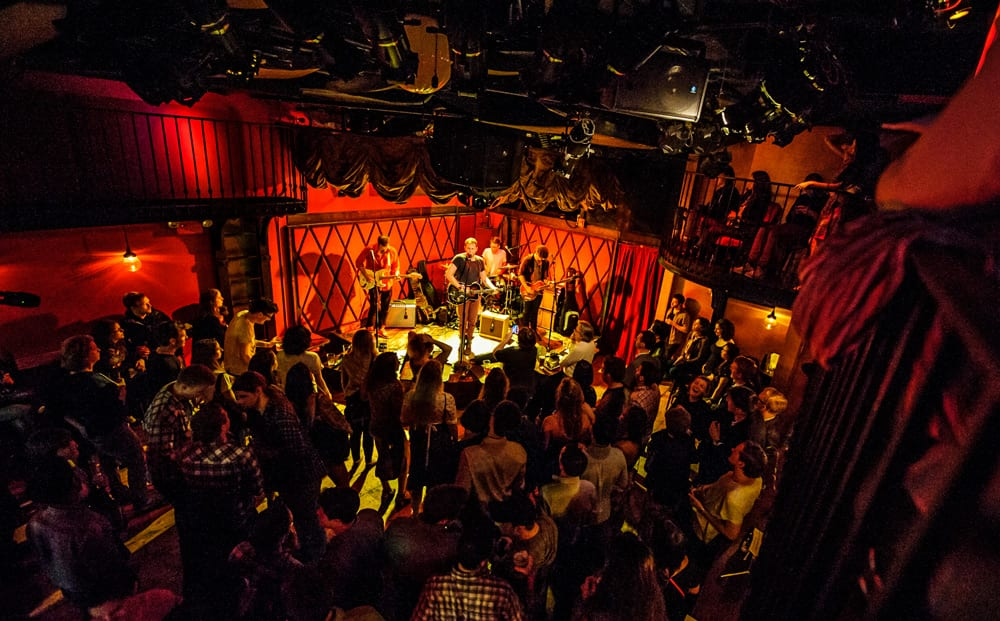

As I said I love coding and I've been into competitive programming for the past good 8 months. The journey has been fun. A faculty and the seniors in our college are helping us to learn the requisites required to solve a given problem. I don't have much grip over but exploration is best thing in the world you can explore and learn. Music has always been a huge part of life to reiterate a dialogue *Music meri jaan hain*. My favourite band is Agam which is a Carnatic Progressive Rock band based in B'lore. The other thing I like is tech. I have been into tech for the time unknown I write reviews for other tech blogs for reviews. I rise in smartphone industry helped to learn a lot about the smartphone hardware and software and it is a wonderful time for the smartphones considering the immaculate progress in the field of both hardware and software.
Competitive programming

I saw a blog on codeforces which gave me an
an introduction to competitive programming world.
Newcomers may struggle to
cope in with the competitive programming problems.
I would really like to make people familiar
with the concept of competitive programming. I’ve been interested in programming since class XI
, but it was limit to academics until my 2nd year in engineering
Music

Music...Music is some vocal or instrumental sounds (or both) combined in such a way as to produce beauty of form harmony,
and expression of emotion. Since god when we all listen music.. and who does not.. everyone had there way around music
cause it's just the mere closeness that brings a person to gist of the things encapsulated in the lyrics some find
their love in a person singing about the idiots who romanticise the first thing they see and doing it in a way
so that they can appreciate just makes the point what is life without love.
Tech Blogs
I found the love for tech when I was in 8th. We had just bought a new computer with an shimmy i3 processor which was gold back in the day. And with a Dual core processor I knew I could make the PC do things. With the Internet revolution I started to read about mobiles gizmos and whatnot. Hence started the journey.. When I was in my 10th grade I got the the opportunity to Write reviews as a freelancer for blogs and did a few of them and started a own website. which was deleted when I was in my boards year. With the help of Wix I made another one which is under development. Here is the link to it